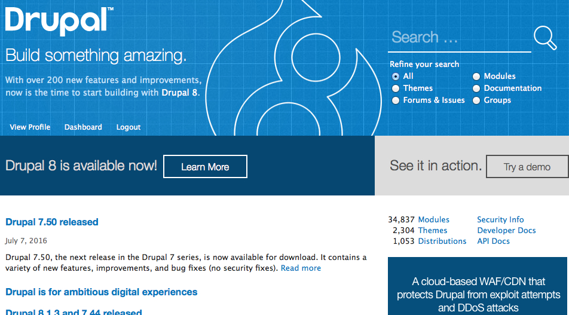
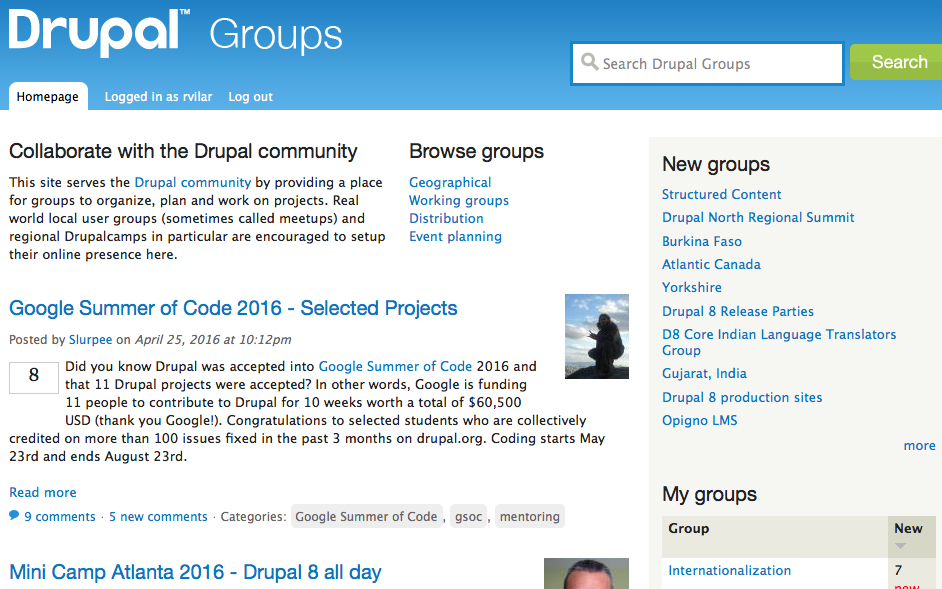
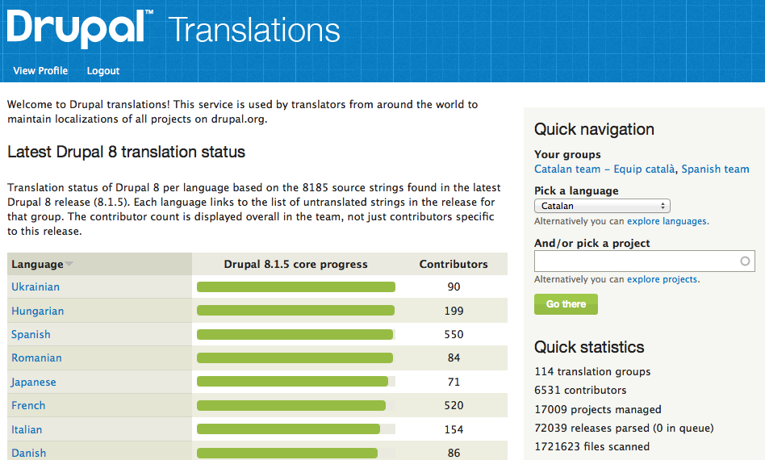
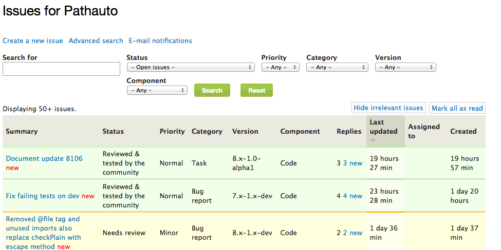
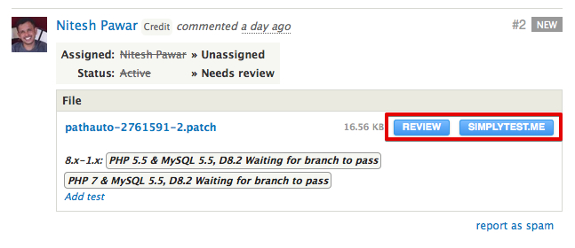
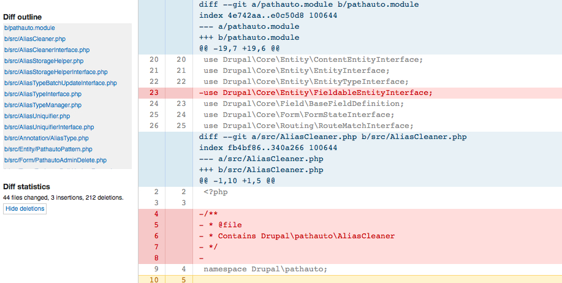
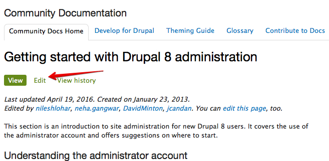
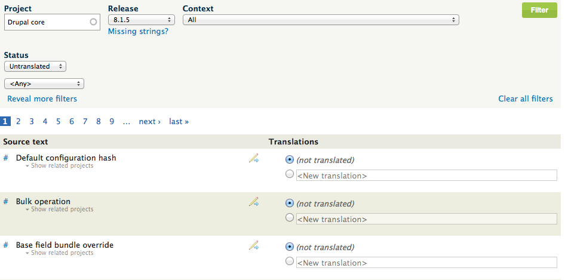
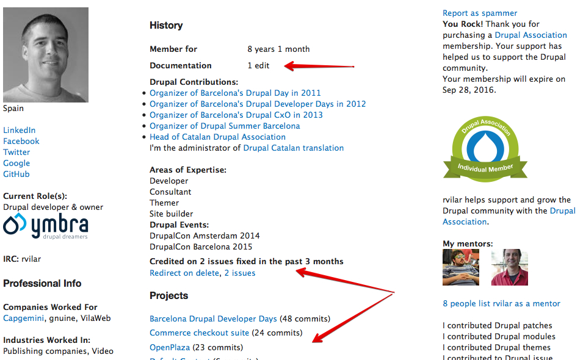
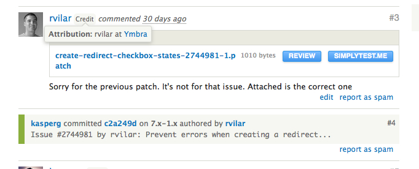

¿Qué podemos contribuir a Drupal y cómo podemos hacerlo?
by Ramon Vilar / @rvilar
About me

Ramon Vilar
Fundador de Ymbra
Drupal es software libre
Drupal y todo su código está sujeto a licencia GPL 2
No hay "ninguna" empresa que se encargue del curso que debe tomar Drupal
Es la comunidad quien toma las decisiones organizada en grupos de trabajo
Herramientas de soporte a la comunidad
Drupal.org
Página del proyecto con toda la documentación y código de Drupal y sus módulos y temas contribuidos
groups.drupal.org
Grupos de trabajo para organizarse.
localize.drupal.org
Plataforma de traducción del núcleo de Drupal y módulos y temas contribuídos
Cómo puedo ayudar al proyecto
Hay muchas formas de ayudar a mejorar Drupal, y no todas pasan por mejorar su código o funcionalidades
La única necesidad para contribuir es tener ganas de hacerlo
El primer paso es tener en cuenta en drupal.org
Contribuir sin saber programar
La issues queue
Todo proyecto en Drupal tiene una issue queue
Una issue puede documentar un bug, una mejora, una discusión, etc.
Los estados de las issues
Una issue puede estar en varios estados. Los más importantes:
- Active
- Needs Work
- Needs Review
- Reviewed & Tested by the Community
- Fixed
- Closed(...)
Reportar bugs
En caso de encontrar un problema de funcionamiento, creamos una issue "Active"
Al crear una issue, tenemos diponible una plantilla
Siempre es mejor que sobre información
Priority: Normal
Probar patches
Podemos ayudar probando patches subidos
Issues en estado "Needs Review"
Dreditor y simplytest.me son nuestros aliados
Dreditor
Diseño y UX
Hay muchos módulos o páginas del core que agradecerían una limpieza de cara
Es uno de los puntos en los que se puede ayudar más a Drupal
Cualquier módulo estará agradecido que se le hagan mejoras en su UX
Documentación
Drupal tiene documentación para todo tipo de usuarios
Con la salida de Drupal 8, hay partes no documentadas
Todos podemos contribuir y es muy fácil
Traducciones
Tener la interfaz en nuestro idioma ayuda en la entrada de nuevos usuarios
Traducir siempre con el contexto de la aplicación presente
Localization client nos puede ser de mucha ayuda
Organizar eventos
Se puede ayudar mucho a Drupal atrayendo nuevos usuarios y talento
Tenemos que pensar que todos podemos aportar al proyecto, y cuántos más usuarios, mejor
De organizar un meetup a organizar una DrupalCamp sólo hay un paso...
Y muchas ganas de pasarlo bien
Contribuir sabiendo programar
Preparación de nuestro entorno
- Git instalado en nuestra máquina
- Configurar nuestro correo correctamente en drupal.org
Crear un parche
git clone --branch 8.x-1.x https://git.drupal.org/project/l10n_client.gitcd l10n_clientHacemos nuestros cambios
git diff > [description]-[issue-number]-[comment-number].patchArreglar bugs
Mejor empezar siempre en módulos contribuidos
Podemos fijarnos en las issues en estado Active, Needs work o Patch (to be ported)
Asignarnos la issue y a trabajar!
Añadir mejoras
En el core y en contribuidos se añaden mejoras constantemente
Paciencia porque suelen ser issues de resolución lenta
Crear nuestro módulo o tema
Todo usuario con cuenta en d.o puede crear proyectos sandbox
Se puede pedir que nuestro sandbox pase a ser un proyecto "completo"
Evalúa el unir esfuerzos con otros módulos
Házte co-mantainer. ¡Alguien te necesita!
Karma en drupal.org
Atribución de parches
A ponerlo en práctica
Mañana hay sprints por la mañana de 9.00 a 14.00
Habrá sesión de mentoring de 9.00 a 10.00
Aprovechar la oportunidad
...y a partir del lunes, nos vemos en IRC
#drupal.cat #drupal-es